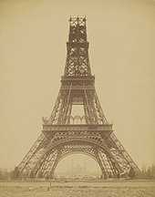

Paris (French pronunciation: [paʁi] (listen)) is the capital and most populous city of France, with an estimated population of 2,165,423 residents in 2019 in an area of more than 105 km² (41 sq mi),[4] making it the 34th most densely populated city in the world in 2020.[5] Since the 17th century, Paris has been one of the world's major centres of finance, diplomacy, commerce, fashion, gastronomy, science, and arts, and has sometimes been referred to as the capital of the world or "the City of Light".[6] The City of Paris is the centre of the region and province of Île-de-France, or Paris Region, with an estimated population of 12,262,544 in 2019, or about 19% of the population of France.[7] The Paris Region had a GDP of €739 billion ($743 billion) in 2019, which is the highest in Europe.[8] According to the Economist Intelligence Unit Worldwide Cost of Living Survey, in 2021, Paris was the city with the second-highest cost of living in the world, tied with Singapore, and after Tel Aviv.
Paris is a major railway, highway, and air-transport hub served by two international airports: Paris–Charles de Gaulle (the second-busiest airport in Europe) and Paris–Orly.[10][11] Opened in 1900, the city's subway system, the Paris Métro, serves 5.23 million passengers daily;[12] it is the second-busiest metro system in Europe after the Moscow Metro. Gare du Nord is the 24th-busiest railway station in the world and the busiest located outside Japan, with 262 million passengers in 2015.[13] Paris is especially known for its museums and architectural landmarks: the Louvre received 2.8 million visitors in 2021, despite the long museum closings caused by the COVID-19 virus.[14] The Musée d'Orsay, Musée Marmottan Monet and Musée de l'Orangerie are noted for their collections of French Impressionist art. The Pompidou Centre Musée National d'Art Moderne has the largest collection of modern and contemporary art in Europe. The Musée Rodin and Musée Picasso exhibit the works of two noted Parisians. The historical district along the Seine in the city centre has been classified as a UNESCO World Heritage Site since 1991; popular landmarks there include the Cathedral of Notre Dame de Paris on the Île de la Cité, now closed for renovation after the 15 April 2019 fire. Other popular tourist sites include the Gothic royal chapel of Sainte-Chapelle, also on the Île de la Cité; the Eiffel Tower, constructed for the Paris Universal Exposition of 1889; the Grand Palais and Petit Palais, built for the Paris Universal Exposition of 1900; the Arc de Triomphe on the Champs-Élysées, and the hill of Montmartre with its artistic history and its Basilica of Sacré-Coeur.
aris hosts several United Nations organisations: the UNESCO, the Young Engineers / Future Leaders, the World Federation of Engineering Organizations, and other international organisations such as the OECD, the OECD Development Centre, the International Bureau of Weights and Measures, the International Energy Agency, the International Federation for Human Rights, the International Organisation of La Francophonie; along with European bodies such as the European Space Agency, the European Banking Authority or the European Securities and Markets Authority. Other international organisations were founded in Paris such as the CIMAC in 1951 (International Council on Combustion Engines | Conseil International des Machines à Combustion),[16] or the modern Olympic Games in 1894[17] which was then moved to Lausanne, Switzerland.
The football club Paris Saint-Germain and the rugby union club Stade Français are based in Paris. The 80,000-seat Stade de France, built for the 1998 FIFA World Cup, is located just north of Paris in the neighbouring commune of Saint-Denis. Paris hosts the annual French Open Grand Slam tennis tournament on the red clay of Roland Garros. The city hosted the Olympic Games in 1900, 1924 and will host the 2024 Summer Olympics. The 1938 and 1998 FIFA World Cups, the 2007 Rugby World Cup, as well as the 1960, 1984 and 2016 UEFA European Championships were also held in the city. Every July, the Tour de France bicycle race finishes on the Avenue des Champs-Élysées in Paris.
The Parisii, a sub-tribe of the Celtic Senones, inhabited the Paris area from around the middle of the 3rd century BC.[29][30] One of the area's major north–south trade routes crossed the Seine on the île de la Cité; this meeting place of land and water trade routes gradually became an important trading centre.[31] The Parisii traded with many river towns (some as far away as the Iberian Peninsula) and minted their own coins for that purpose.
The Romans conquered the Paris Basin in 52 BC and began their settlement on Paris's Left Bank.[33] The Roman town was originally called Lutetia (more fully, Lutetia Parisiorum, "Lutetia of the Parisii", modern French Lutèce). It became a prosperous city with a forum, baths, temples, theatres, and an amphitheatre.
Late in the 19th century, Paris hosted two major international expositions: the 1889 Universal Exposition, was held to mark the centennial of the French Revolution and featured the new Eiffel Tower; and the 1900 Universal Exposition, which gave Paris the Pont Alexandre III, the Grand Palais, the Petit Palais and the first Paris Métro line.[65] Paris became the laboratory of Naturalism (Émile Zola) and Symbolism (Charles Baudelaire and Paul Verlaine), and of Impressionism in art (Courbet, Manet, Monet, Renoir)
Go to this website for your booking : Book now